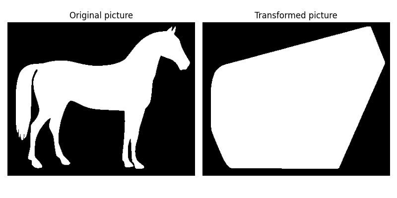

The convex hull of a binary image is the set of pixels included in the smallest convex polygon that surround all white pixels in the input.
In this example, we show how the input pixels (white) get filled in by the convex hull (white and grey).
A good overview of the algorithm is given on Steve Eddin’s blog.
import numpy as np
import matplotlib.pyplot as plt
from skimage.morphology import convex_hull_image
image = np.array(
[[0, 0, 0, 0, 0, 0, 0, 0, 0],
[0, 0, 0, 0, 1, 0, 0, 0, 0],
[0, 0, 0, 1, 0, 1, 0, 0, 0],
[0, 0, 1, 0, 0, 0, 1, 0, 0],
[0, 1, 0, 0, 0, 0, 0, 1, 0],
[0, 0, 0, 0, 0, 0, 0, 0, 0]], dtype=float)
original_image = np.copy(image)
chull = convex_hull_image(image)
image[chull] += 1
# image is now:
# [[ 0. 0. 0. 0. 0. 0. 0. 0. 0.]
# [ 0. 0. 0. 0. 2. 0. 0. 0. 0.]
# [ 0. 0. 0. 2. 1. 2. 0. 0. 0.]
# [ 0. 0. 2. 1. 1. 1. 2. 0. 0.]
# [ 0. 2. 1. 1. 1. 1. 1. 2. 0.]
# [ 0. 0. 0. 0. 0. 0. 0. 0. 0.]]
fig, axes = plt.subplots(1, 2, figsize=(9, 3))
ax = axes.ravel()
ax[0].set_title('Original picture')
ax[0].imshow(original_image, cmap=plt.cm.gray, interpolation='nearest')
ax[0].set_axis_off()
ax[1].set_title('Transformed picture')
ax[1].imshow(image, cmap=plt.cm.gray, interpolation='nearest')
ax[1].set_axis_off()
plt.tight_layout()
plt.show()
Total running time of the script: (0 minutes 0.167 seconds)
plot_convex_hull.pyplot_convex_hull.ipynb Source
Source